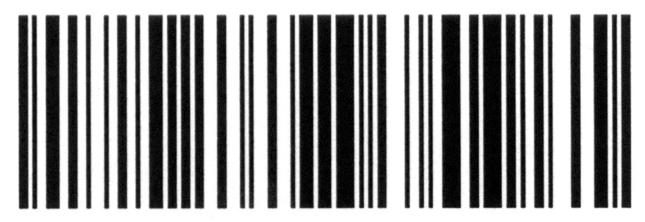

Joung lab time
inline style
余憶童稚時，能張目對日，明察秋毫。見藐小微物，必細察其紋理，故時有物外之趣。
夏蚊成雷，私擬作群鶴舞空，心之所向，則或千或百，果然鶴也；昂首觀之，項為之強。又留蚊於素帳中，徐噴以煙，使之沖煙飛鳴，作青雲白鶴觀；果如鶴唳雲端，為之怡然稱快。
又常於土牆凹凸處、花臺小草叢雜處，蹲其身，使與臺齊；定神細視，以叢草為林，蟲蟻為獸；以土礫凸者為丘，凹者為壑，神遊其中，怡然自得。
一日，見二蟲鬥草間，觀之，興正濃，忽有龐然大物，拔山倒樹而來，蓋一癩蝦蟆也。舌一吐而二蟲盡為所吞。余年幼，方出神，不覺呀然驚恐。神定，捉蝦蟆，鞭數十，驅之別院。
Internal style sheet
背影
我與父親不相見已有二年餘了，我最不能忘記的是他的背影。那年冬天，祖母死了，父親的差使也交卸了，正是禍不單行的日子，我從北京到徐州，打算跟著父親奔喪回家。到徐州見著父親，看見滿院狼籍的東西，又想起祖母，不禁簌簌地流下眼淚。
父親說，“事已如此，不必難過，好在天無絕人之路！”
回家變賣典質，父親還了虧空；又借錢辦了喪事。這些日子，家中光景很是慘淡，一半為了喪事，一半為了父親賦閒。喪事完畢，父親要到南京謀事，我也要回到北京唸書，我們便同行。
到南京時，有朋友約去遊逛，勾留了一日；第二日上午便須渡江到浦口，下午上車北去。父親因為事忙，本已說定不送我，叫旅館裏一個熟識的茶房陪我同去。他再三囑咐茶房，甚是仔細。但他終於不放心，怕茶房不妥貼；頗躊躇了一會。其實我那年已二十歲，北京已來往過兩三次，是沒有甚麼要緊的了。他躊躇了一會，終於決定還是自己送我去。我兩三回勸他不必去；他只說，“不要緊，他們去不好！”
box model
CSS 排版有一個很重要的觀念： Box Model 。它描述了元素之間的彼鄰關係，同時也左右了我們是否能夠成功透過 CSS ，完成整個頁面的呈現。
Box Model 的意思是說，每一個元素我們都可視它為一個 Box 。一個 Box 由以下屬性組成：margin 、 padding 、 border 、 content 。一個 Box 的實際寬度 (高度) 是由 padding + border + width (height) 所組成。
外面綠色是border，文字與綠色border之間是padding，文字部分代表content，本box的margin為50px。
排版觀念
定位 position
- static
- relative
- absolute
- fixed
relative
朋友買了一件衣料，綠色的底子帶白色方格，當她拿給我們看時，一位對圍棋十分感與趣的同學說：
「啊，好像棋盤似的。」
「我看倒有點像稿紙。」我說。
「真像一塊塊綠豆糕。」一位外號叫「大食客」的同學緊接著說。
我們不禁哄堂大笑，同樣的一件衣料，每個人卻有不同的感覺。那位朋友連忙把衣料用紙包好，她覺得衣料就是衣料，不是棋盤，也不是稿紙，更不是綠豆糕。
人人的欣賞觀點不盡相同，那是和個人的性格與生活環境有關。
如果經常逛布店的話，便會發現很少有一匹布沒有人選購過；換句話說，任何質地或花色的衣料，都有人欣賞它。一位鞋店的老闆曾指著櫥窗裡一雙式樣毫不漂亮的鞋子說：「無論怎麼難看的樣子，還是有人喜歡，所以不怕賣不出去。」
就以「人」來說，又何嘗不是如此？也許我們看某人不順眼，但是在他的男友和女友心中，往往認為他如「天仙」或「白馬王子」般地完美無缺。
人總會去尋求自己喜歡的事物，每個人的看法或觀點不同，並沒有什麼關係，重要的是──人與人之間，應該有彼此容忍和尊重對方的看法與觀點的雅量。
如果他能從這扇門望見日出的美景，你又何必要他走向那扇窗去聆聽鳥鳴呢？你聽你的鳥鳴，他看他的日出，彼此都會有等量的美的感受。人與人偶有摩擦，往往都是由於缺乏那分雅量的緣故；因此，為了減少摩擦，增進和諧，我們必須努力培養雅量。
浮動 float
{ float: left; }
{ float: right; }
如果說浮動 (float) 是 CSS 排版的重要技巧之一，實在一點也不為過；很多著名的 CSS 版型都會用到浮動技巧。本文就來介紹浮動所需要注意的地方，以及可能會碰到的問題。
浮動是設定元素的 float 屬性，我們能設定向左 (left) 或向右 (right) 浮動。浮動基本上會使得元素在有足夠的空間時，往父元素的左邊或右邊靠緊。接著原本跟在這個元素後面的其他元素，就會自動往上跑 (不過這裡會有部份要考量的地方，稍後再談)。當元素被設定浮動時，會自動變成區塊顯示元素 (display: block) ，這時候我們就可以設定元素的 width 和 height 了。
不過要注意一點：當我們把 position 設為 absolute 時，浮動會失效。
浮動會因為元素先後順序而有所影響。
如果說浮動 (float) 是 CSS 排版的重要技巧之一，實在一點也不為過；很多著名的 CSS 版型都會用到浮動技巧。本文就來介紹浮動所需要注意的地方，以及可能會碰到的問題。
浮動是設定元素的 float 屬性，我們能設定向左 (left) 或向右 (right) 浮動。浮動基本上會使得元素在有足夠的空間時，往父元素的左邊或右邊靠緊。接著原本跟在這個元素後面的其他元素，就會自動往上跑 (不過這裡會有部份要考量的地方，稍後再談)。當元素被設定浮動時，會自動變成區塊顯示元素 (display: block) ，這時候我們就可以設定元素的 width 和 height 了。
不過要注意一點：當我們把 position 設為 absolute 時，浮動會失效。
浮動會因為元素先後順序而有所影響。
如果說浮動 (float) 是 CSS 排版的重要技巧之一，實在一點也不為過；很多著名的 CSS 版型都會用到浮動技巧。本文就來介紹浮動所需要注意的地方，以及可能會碰到的問題。
浮動是設定元素的 float 屬性，我們能設定向左 (left) 或向右 (right) 浮動。浮動基本上會使得元素在有足夠的空間時，往父元素的左邊或右邊靠緊。接著原本跟在這個元素後面的其他元素，就會自動往上跑 (不過這裡會有部份要考量的地方，稍後再談)。當元素被設定浮動時，會自動變成區塊顯示元素 (display: block) ，這時候我們就可以設定元素的 width 和 height 了。
不過要注意一點：當我們把 position 設為 absolute 時，浮動會失效。
浮動會因為元素先後順序而有所影響。
樣式 style
國立臺灣大學教職證
National Taiwan University
- 系所：資訊管理學系
- 學號：BXX7050XX
- 姓名：莊裕澤
- 生日：民國XX年XX月XX日
